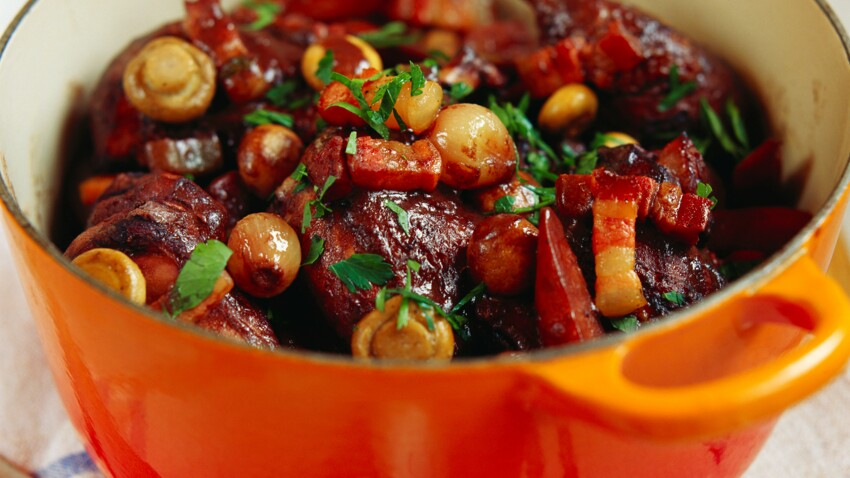

Le coq au vin est un mets emblématique de la cuisine française, à base de découpes de coq marinées, puis braisées dans un vin rouge ou blanc, agrémentée d'un bouquet garni, de lardons, de champignons, de carottes et d'oignons
1 Coq
2 Bouteilles de Côtes du Rhône
3 Gros oignons
1 Carotte
1 cuillère à soupe de farine
Lardons
Champignons de Paris
Thym, Laurier, Coriandre, Clou de Girofle